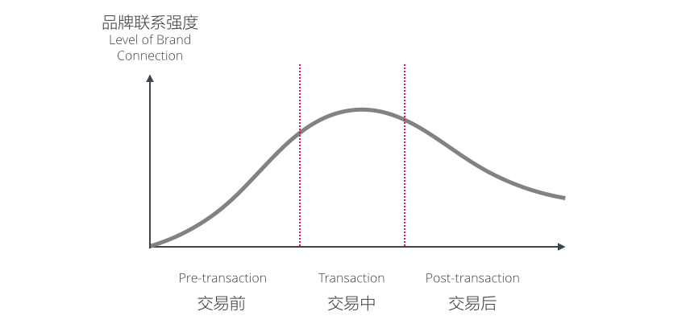
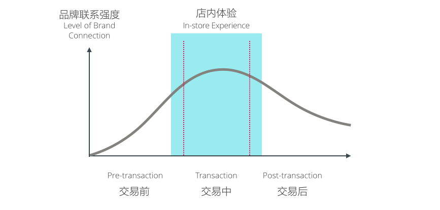
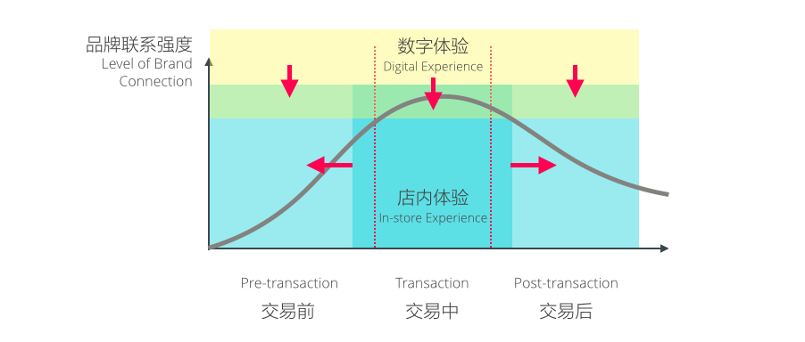
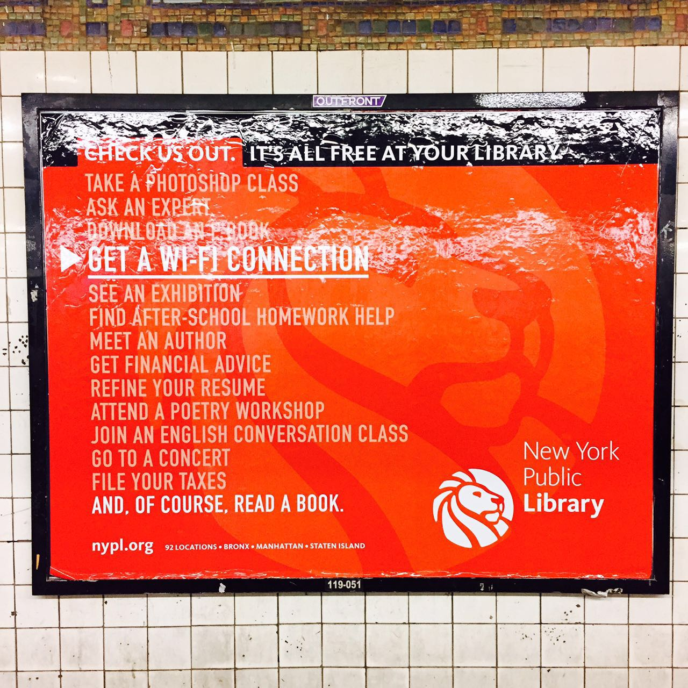
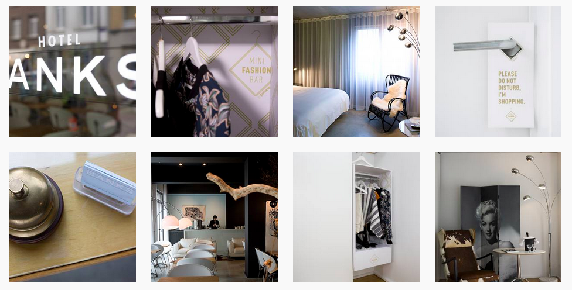
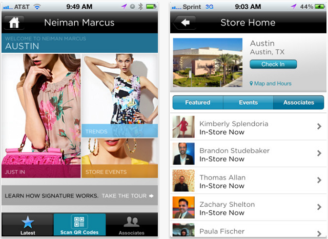
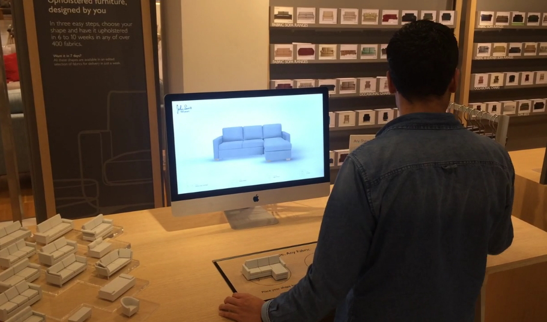
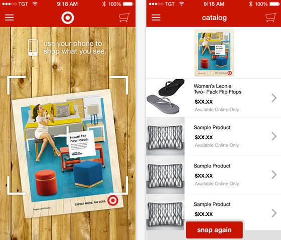
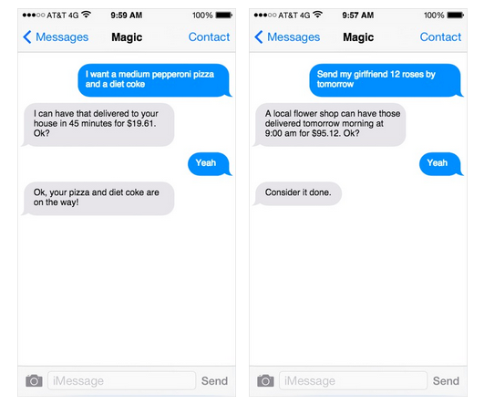

误入Warby Parker在苏活区的店，考究的木书架上放的是精选的《巴黎评论》，还有中世纪靠椅，你以为你在精选的独立书店或图书馆，事实上，你在眼镜店。
而苹果零售店的野心是「不再销售」：让交易在整个品牌体验中「自然发生」，这也是为什么忙碌的「天才吧」成员，看起来更像是你周围那些极客朋友，而不是销售员。
传统关系
传统零售中顾客和品牌的关系正在被改变，在传统模式中，顾客通过「交易」和品牌建立一种契约，关系正式建立：
顾客通过交易和品牌建立关联，对零售商而言大量的工作围绕在交易周围，客户与品牌的联系的强度往往在交易发生时达到最高。

从传统零售店的经营考虑，大部分直接面向顾客的服务都有如下特征：
- 只发生在实体店内；
- 为交易服务：展示、分类、上架、销售员、体验、支付等。
绝大部分的实体服务只覆盖交易中的部分，这也是为什么传统零售业只（或者只能）关注交易的原因（下图蓝色部分）。

线上电商的逻辑
而线上电商的经营逻辑却消弭了「交易」的概念，因为没有实体的销售场所，其更加重视的是顾客全流程的体验和品牌粘性，利用技术手段尽可能缩短交易的时间、降低交易的成本，其所能提供的服务由以下特征：
- 可能发生在所有环节中；
- 为流量、品牌粘性和转化率服务。
线上电商技术的特点使得线上电商更容易收获这些服务期待达到的效果，例如利用内容引流、制造粘性、更精准的营销活动。
面对自己远超于线上电商的重资产，传统零售商逐渐发现，重新开始建立自己的线上渠道尝试复制线上电商的模式最终的结果只有：
- 与实体店相互冲突，争抢客源；
- 由于技术和运营的负担，在技术和经营能力上永远无法与线上电商匹敌。
传统零售的机会
事实上，数据显示，90%的美国购物消费依然发生在实体店中，而实体店将变成「试衣间」的担忧并没有成为现实，PwC最新的2015年全球消费者报告显示，19000位来自19个地区中68%的消费者在有目的性的在店内体验、线上购买；而70%的消费者同时也表示曾经在线上浏览，却决定在线下购买。
这使得传统零售商开始意识到自己劣势也许并不是想象中的负担，相反，可能成为一种优势，以下实体店优势是线上电商难以达成的：
- 真实的产品和服务体验；
- 立即获得产品而毋须等待；
- 更有优势的品牌积累能力。
新战略
于是，传统零售商开始调整自己的数据转型战略，在这个战略中包括：
- 扩充：削弱「促进交易」在整个战略中的重要性、即围绕在实体体验周围扩充实体体验到交易前和交易后的客户场景；
- 下沉：下沉已有数字资产（Digital Assets）到实体体验的全部环节中。

扩充战略
纽约的地铁站里，挂着纽约公共图书馆的广告，传统图书馆的核心体验「读书」放在了最后，图书馆还提供诸如「作业辅导」、「建立制作」、「报税指导」等服务，这就是传统零售商的「扩充战略」：尽可能满足目标顾客群的各种需要，而不仅限于交易场景。

这样的扩充首先体现在店内体验的扩充，英国著名零售商Selfridges在其伦敦的概念店中推出了Fragrance Lab，在这个设计中，香水实验室的香水设计师可以根据顾客的特征为其专门定制香水，顾客和品牌的互动变得更加多元化。
扩充战略还体现在与其他相关品牌的「融合」，高端服饰品牌Club Monaco在哥本哈根与当地著名的餐厅Noma合作，在就餐的同时让顾客享受购物体验。
法国服装品牌Pimkie甚至将服装店开在了顾客的酒店房间里，其刚刚推出的Mini Fashion Bar项目让客户在酒店房间里就可试穿其专门为顾客挑选品牌服装，并可以直接购买。

下沉战略
下沉战略的核心是将数字体验尽可能地下沉到顾客全体验中所有元素里，而不仅仅只是移动端战略，首当其冲的是销售人员的数字化能力，这也是大多数零售商最先尝试的。
高端品牌零售商Neiman Marcus早在2012年就推出了将顾客和销售关联起来的服务（参考），顾客可以通过手中的App直接和销售进行沟通，由销售提供更加人性化和定制化的服务。

为顾客在店内提供更好的数字化体验通常是零售商的第二个重要战略：让顾客在店内能够使用数字化渠道越来越多，更多信息用更丰富的互动方式进行展示，多个渠道之间实现无缝的连接。多种技术的逐渐成熟使得店内数字体验的创新更加丰富，这些技术包括：
- 传感器技术所代表的物联网技术；
- 无线通信技术；
- 虚拟现实技术；
- 新的交互技术，如高精细度触屏、动作识别等；
- 人工智能和语音或图像识别技术。
英国百货零售商John Lewis在其店内推出虚拟化的家具配搭工具Any Shape and Fabric Store，使用虚拟现实技术，顾客可以实现不同家具之间的摆放、颜色的配搭等。

数字技术也帮助顾客的购物行为超越店内体验，美国零售商Target在去年推出的Target Snap应用让顾客在任何地方只要扫描一张海报，就可通过图像识别技术识别海报中的商品，直接在应用中进行购买。

各种数字渠道也被无缝的整合在一起，线上和线下的体验，从来没有变得这样无缝，这也是线上电商无法企及的。新晋的创业公司Magic，尝试提供一个通过短信整合多种零售服务的平台，让顾客可以通过简单的短信发送进行购买，老牌零售商Nordstrom也于去年推出了通过短信进行购买的服务。在这样的服务中顾客习惯的线下体验和多个数字渠道无缝地整合在一起。

这便是最具备创新性的传统零售商未来之店核心战略，即：
- 尽可能地扩充服务体验，突破传统以「交易」为核心关系的模式，为客户提供更多价值；
- 尽可能地将现有数字能力贯穿到被扩充的服务体验中，并构建平台建立更多地数字能力，并将它们整合在一起，虚拟和现实体验被大大模糊化。
写在最后
实体店购物在未来依然是人们购物的主要场景之一，线上电商不可能取代实体零售体验，而未来的趋势一定是零售商传统模式被大大扩充，我们将会看到更加融合的购物体验、更加强大的线下数字体验（Digical Experience）、更加无缝整合的线上下渠道，顾客和品牌的关系将不再围绕在「交易」本身。
最后，欢迎大家光临「未来之店」。